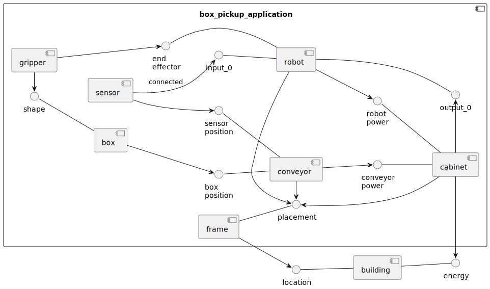

Introduction
For technical projects where for example communication between different systems, or automated functions have to be defined, pictures say more than a thousand words. What you design will be used by your colleagues, reviewed by your teachers, or used by your future self. So properly communicating your ideas is important.
To give you an idea on what you can do in approximately 30 lines of text:

Example diagram code
@startuml pickup_parcel_from_coveyor
skinparam backgroundColor transparent
left to right direction
component box_pickup_application {
[frame]
() placement -u- frame
[robot]
() input_0 -- robot
() output_0 -- robot
() "end\neffector" -- robot
[sensor]
sensor --> input_0 : connected
sensor --> "sensor\nposition"
robot -> placement
[cabinet]
() "robot\npower" -- cabinet
() "conveyor\npower" -- cabinet
cabinet -u-> placement
robot --> "robot\npower"
cabinet -r-> output_0
[conveyor]
() "sensor\nposition" -- conveyor
() "box\nposition" -- conveyor
conveyor -> placement
conveyor --> "conveyor\npower"
[box]
() shape -- box
[gripper]
gripper -l-> shape
box --> "box\nposition"
gripper --> "end\neffector"
}
[building]
() energy -l- building
() location -d- building
frame --> location
cabinet -r-> energy
@enduml
Advantages
How would you explain in approximately 30 lines of written text to your boss or colleague how your setup will work? The diagram was made in approximately 15 minutes from scratch and gave immediate insight in what was missing. A further 10 minutes brought it to where it is now.
Don't be afraid to use this because your manager will not understand the source of the diagram. That's why you've made the diagram :) ... So it's easy to understand.
Creating diagrams this way has advantages:
-
When making these images you'll use a syntax, you'll be gently forced to write correct diagrams.
-
These diagrams are made for a specific way of communicating. Just what is needed.
-
Working from the keyboard, describing functionality instead of burning litres of mouse-fuel in fancy GUI's will let you focus on describing your system, and not be distracted by nice colors, arrow shapes and whatnot.
During a project specs or implementations tend to change when deeper insight comes. So focussing on content instead of prettieness saves lots of time. You'll be changing your diagrams frequently.
-
Using plain text makes for easy version control.
-
Using a version control system enables working simultaneous on a project.
This guide...
... will show you how to set up a minimal system with which you can maintain your documentation about a project.
During this guide you will have to create your own local setup. When done successfully additional instructions for other tools, tips and tricks etcetera will appear.
For example:
- How to work together on a project by using Git.
- Learn about branching and merging branches.
- Excersize creating pull requests to your team's repository.
- Creating Sequence diagrams, State machines.
- Tips and tricks when working with Visual Studio Code.
Tools
To get started, you'll need to install Visual Studio Code, GIT, Docker and mdBook. We'll use Windows executables. You're free to use development setups and whatnot, but you're on your own when things do not work.
ShareX
A general usefull tool for taking snapshots and whatnot is ShareX
Draw.io
Another usefull program is Draw.io It allows you to visually draw flowcharts. If you prefer a desktop application, the search the Windows store or download from Github
Inkscape
For quickly (with a small learning curve) drawing overviews and depicting principles (and more) you can use Inkscape.
Git
Git is used to maintain source code. When working with -for example- robot programs in plain text this is an ideal method of keeping track of changes. Next to that, using Git enables working together on the same project/files/documentation.
NOTE: Git is not suitable for binary files.
Read up on installation and configuration:
After installing Git for windows, open Powershell or another console and setup your credentials.
git config --global user.name "John Doe"
git config --global user.email johndoe@example.com
Docker
Docker is software to run software in a container. Because it's in contained and easy to download an image, it's very easy to use software that's hard to set up or has been written (for Linux). If the software is run by a server, it's easy to use locally without having to know about setting up a server in language whatnot.
- Download Docker desktop
- Use
WSL2option during install.

- Follow instructions when the Computer and Docker have restarted.

- Open Windows Poweshell and use wsl 2 as standard
wsl --set-default-version 2
PlantUML server
Follow these instructions to install the PlantUML docker container. Using a container allows ease of running a local server. This way you do not need to have access to the Internet in case you are working in a factory where access to the Internet is limited or unavailable.
- Pull (Download) the PlantUML server container by starting it with:
docker run -d -p 8080:8080 plantuml/plantuml-server:jetty
- Allow Windows firewall to use port 8080

- In Docker Desktop you can now see the container running. As per the startup arguments it has connected port 8080 of the container to port 8080 of our computer.

- Browse to the adress http://localhost:8080 to use PlantUML server.
If you have trouble accessing the container due to possibly other servers using the localhost 8080 port, please connect the container port 8080 to another local port like 8181 like so:
-
When starting from the command line use the following startup command:
docker run -d -p 8181:8080 plantuml/plantuml-server:jetty -
Or start the container from Docker desktop by choosing
Images -> plantuml/plantuml-server, press therunbutton in the top right corner and change the port like so:
-
Browse to the adress http://localhost:8181 to use PlantUML server.
Visual Studio Code
For writing the documentation we'll use Microsoft's Visual Studio Code. This is an IDE with various plug-ins that will help with the writing process. Because we're not hindered by word processor software like Microsoft Word we can focus on the content and because we write in plain text, we can use Git for revisions, merging work by multiple authors, and have it displayed (rendered) in various tools.
-
Download and install Microsoft Visual Studio Code.
-
Open Microsoft Visual Studio Code (from now on abbreviated as
VS Code). -
Open the
Extensionstab on the left and search for packages that will help with the workflow.
-
Install
PlantUML
-
Install
GitLens
-
Install
Markdown All in One
Setup of PlantUML extension
Instead of using the demo webserver of the PlantUML organisation, the PlantUML extension can use a local server. This can only be done if you have correctly installed Docker and also installed the PlantUML server container (O r if you're a PRO installed the PlantUML server in your own way.)
-
in
VS Codeopen the settingd byCRTL+, -
search for
plantumlin the search box
-
Choose
PlantUMLServerfor renderer. -
Change the URL of the server to the correct adress of the PlantUML server docker container.
Try making a very simple diagram
mdBook
mdBook lets you serves your documentation in a readable way, without you having to know a lot about setting up servers. Similar like the previous chapter about Docker containers. The difference is that mdBook specializes in creating webpages from your information in Markdown format. As an example, see the Rust Programming Language Documentation
These instructions do not cover running mdBook on Linux or with a Docker image. You can try, but you're on your own.
- Go to the mdBook Github releases page
- Download your release and unzip it.
- Copy the content of the unzipped folder (which is a folder), called something like
mdbook-v0.4.30-x86_64-pc-windows-msvctoC:\Program Files - In the windows search bar, search for
Pathand open theEdit the system environment variables. This can also be found in other ways by searching the control panel, or by RMC onThis PCinWindows Explorerand selectingPropertiesThen you selectAdvanced system settingsin the right of the new window.
- Click
Environment variablesbutton
- Select the
Pathenvironment variable.
- Click
Newand paste the location of the folder containing themdBookprogram that you've just moved toC:\Program Files. In my case it'sC:\Program Files\mdbook-v0.4.30-x86_64-pc-windows-msvc
- Click
OKand close the control panel windows.
mdBook diagram plugin
For creating PlantUML diagrams a plugin for mdBook is needed.
- Download the
mdbook-plantuml.exefrom https://github.com/sytsereitsma/mdbook-plantuml/releases. - copy this file to the location of the mdbook executable. The directory location you have just added to the
PATHin the instructions above.
Usage
This chapter will give you instructions on how to use the described tools. You are reading a static generated site. This is OK for now to get you started. For the next part we will start using Git to download the repository that will generate a dynamic site.
Git clone
By cloning a Git repository (repo) you will create a local (on your computer) Git repository from somewhere else. This repository then contains all the code and commits (history). Depending on how a project is structured -by this I mean the conventions of working together- you want to inform the original repository that you have changes.
More exact info will follow on a way that this process can work. But for starters you have to do the following to obtain a local copy of the repo:
-
Create a Github account
-
Log into your account and go to the user you want to clone a repository from (for this example, use the this documentation tutorial)
-
In github, clone the repository to your own github account by using the
Forkbutton. -
Open Powershell or any other console.
-
Create/move to a directory in which you want to have this repository.
-
Clone the repository locally by
git clone https://github.com/your_user_name/technical_documentation_how_to.git
-
Move into the newly created directory, and open the directory with
VS Codeor open the folder from withinVS Code
or

-
You'll be able to see the project's content.

PlantUML
Create a PlantUML diagram
-
In
VS Codecreate a new file with an extension of one of the following.wsd,.pu,.puml,.plantuml,.iuml -
Add the following syntax to that file:
@startuml bert_and_ernie Ernie->Bert : Hey Bert Bert->Ernie : Hey Ernie @enduml -
position your cursor between the
@...umltags and pressALT+Dor do a RMK (Right Mouse Click) to see what other options you have.
-
a preview window on the right should open, showing a sequence diagram showing Bert and Ernie talking

-
read up on Sequence diagrams, State diagrams, Activity diagrams!
mdBook
Serve
Serving this book is done by cloning this repository first as described in the chapter of Git cloning.
Installation of mdBook and the mdbook-diagram plugin must also be finished.
- Open a new console in the root directory of the repository.
- start serving by typing
mdbook-serve
- Go to your local mdBook server